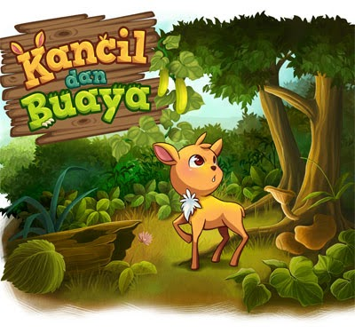

Kucing Hitam

Kucing Hitam mempunyai anak berwarna kuning, tetapi anaknya kesal karena mempunyai induk yang jelek dan hitam. Ia pun berpikir untuk mengganti ibunya dan mencari yang lebih hebat.
Keluarlah ia dari kandangnya, melihat matahari yang cantik dan bersinar. Ia berfikir bahwa matahari cocok untuk menjadi ibunya, lalu bertanya kepada matahari, "Wahai Matahari maukah kau menjadi ibuku?"
Lalu Matahari berkata, "Jangan. Kalau datang awan, nanti ditutupnya aku, maka hilang cahayaku."
Lalu Kucing Kuning bertanya kepada awan, "Wahai Awan maukah kau menjadi ibuku?"
Awan berkata, "Jangan. Nanti datang angin itu, diembuskannya aku, maka aku akan terbang ke mana-mana sampai tidak kelihatan."
Ia bertanya pada Angin, "Angin maukah kau menjadi ibuku?" Angin berkata, "Jangan, kami tidak akan bisa lewat kalau ada gunung itu."
Gunung berkata, "Jangan, nanti datang tikus itu dilubanginya aku, maka aku akan hancur." Lalu ia bertanya pada Tikus, "Tikus maukah kau menjadi ibuku?"
Tikus berkata, "Jangan, nanti datang Kucing Hitam itu, dimakannya aku dan anak-anakku." Kemudian Kucing Kuning pun berpikir dan merasa bahwa ibunya lebih hebat dari yang lain dan tidak ada yang bisa menggantikan ibunya.